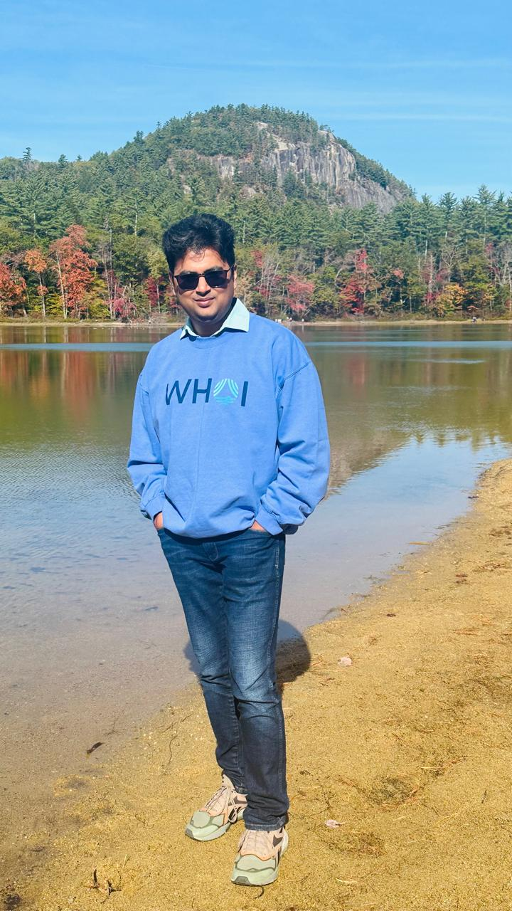
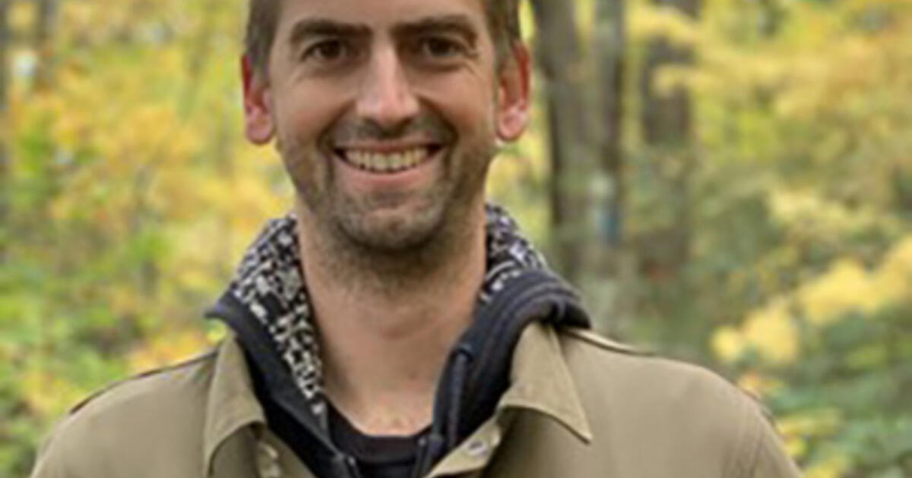
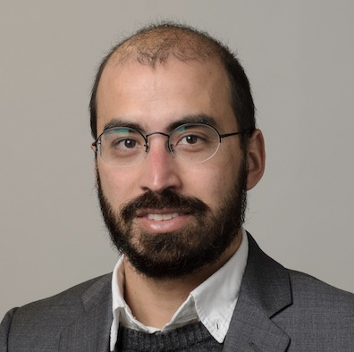
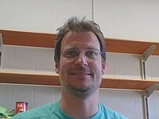
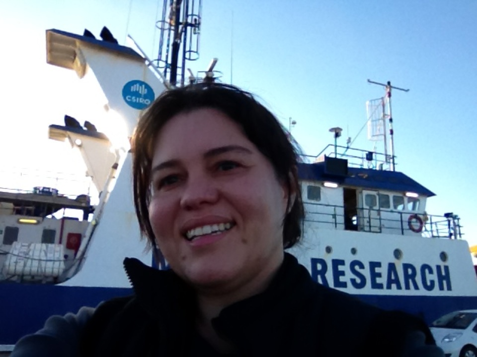

Team
Current and former members of the research group at the Woods Hole Oceanographic Institution.
Current Group Members
Part of the WHOI Upper Ocean Processes Group.

Iury Simoes-Sousa
Postdoctoral Scholar
YG
Yu Gao
Research Associate

Raymond Graham
Senior Engineering Assistant

Ben Hodges
Research Engineer
BG
Benjamin Greenwood
Engineer

Emerson Hasbrouck
Senior Engineering Assistant

Ersen'S Joseph
Engineer
AL
Austin Liou
Research Associate
JS
Jason Smith
Senior Engineering Assistant
Former Group Members
Postdoctoral Scholars
-

Nihar Paul 2024–2026 Professor, Azim Premji University, Bengaluru, India -
LMLeo Middleton 2023–2024 Researcher, University of Gothenburg
-

Seth Zippel 2019–2020 Assistant Professor, Oregon State University -

Cesar Rocha 2018–2020 Professor, University of São Paulo -
UZUriel Zajaczkovski 2017–2019 Director of Core Analytics, WTW
-

Michael Schlundt 2017–2019 Research Scientist, GEOMAR Helmholtz Centre for Ocean Research Kiel -

Viviane Menezes 2016–2017 Assistant Scientist, WHOI -
SDShannon Davis 2015–2016 Wind energy research, U.S. Department of Energy
Graduate Students
- Alec Bogdanoff Ph.D. 2017 MIT-WHOI Joint Program, co-advised with Carol Anne Clayson — Co-Founder, Brizaga (climate adaptation consulting, Miami)
-
EJErsen'S Joseph M.S. 2025 UMass Dartmouth, Mechanical Engineering, co-advised with Amit Tandon — currently an Engineer in the group
Undergraduate Students
- Erica Rosenblum — Summer student, Stony Brook University — now Assistant Professor, University of Toronto
- Roland Ovbiebo — Guest student — now Ph.D. candidate, Scripps Institution of Oceanography, UC San Diego
- Weiguang (Roger) Wu — Summer student, UC San Diego — now MIT-WHOI Joint Program
- Viktoriya Balabanova — Internship and senior capstone project, UMass Dartmouth, Physics
- Ersen'S Joseph — Internship and senior capstone project, UMass Dartmouth, Mechanical Engineering
- Steven Akin — Senior capstone project, Angelo State University — now Ph.D. student, University of Miami
- Nath Dossa — Guest student — now Postdoctoral Researcher, University of Miami
- Sourajit Das — Summer student, IIT Kharagpur